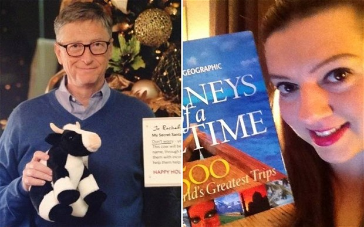

When Shaumik told me about this contest on his new blog directory site, I had to pick my favorite site to write about.
Considering I spend most of my wakeful state online jumping from site to site, this was not an easy task. With a few new tabs on screen, I watched my fingers dance over the keyboard almost involuntarily, giving me a list of sites I visit often:
These are great sites, some give me information, some help me connect, some learn and some are just so beautifully designed. But there was a recent addition to the above hall of fame which changed the way I saw websites altogether.

It's not the most pretty site but
“People are more than just the way they look.” ― Madeleine L'Engle, A Wrinkle in Time
I can talk about how Reddit has information about everything music, sports, futurology, programming, minimalism, explainlikeimfive, calvinandhobbes, just everything!
Or why it so fun, the sarcastic comments, hosts exciting AskMeAnythings, has an overall great community.
But that is not what makes it exceptional.
It's greatness lies in it's soul.
In a world where a significant amount of people are on the internet, most sites just want to make money out of you. If you don't want to pay for a site, they'll copy your contacts, sell your information, sell you!
But reddit was different. Let me show you how:
- The frickin' CEO explains users the change in user agreement in as simple words as possible! I've never ever seen in all of my virtual life, the CEO of a company explain the legal document people agree to without it even looking at it.
Yishan Wong, Reddit CEO
- Sub reddits like /r/yishansucks that make fun of the CEO exist on the site and he loves it. He promotes it as well!
 Trolling Wong
Trolling Wong
- When sites like Facebook force people use their real names, reddit doesn't mind. Anonymous and throw away accounts are common, especially when people want to respond candidly but do not want to reveal their identities.
- They open sourced their entire code in 2008! Now the world not just contributes to the site, they can contribute to the code running it as well.
- Instead of selling their user's data, they chose to look for alternate methods of revenue generation, like reddit gold and reddit gifts.
Reddit Gold is a premium membership program which offers simple benefits like highlighted comments and special offers from other companies. In addition to buying gold for yourself, you can gift gold to authors of comments you like. In fact, gilded comments got viral and more people gift gold to strangers than buying for themselves making the world a happier place :)
Buying this gold, people also support the site they love and spend time on.
Reddit Gifts is a massive online gifts exchange marketplace. They connect internet stranger friends dozens of times a year sending out gifts around the world.
They've been setting and breaking their own Guiness records of largest gift exchange programs since 2011. Even Bill Gates participated this year!

Bill Gates and his secret Santa
- Lastly, reddit has had some great people:
Alexis Ohanian, one of the founders actively campained against internet censorshop laws in US. He helped organize protests against SOPA/PIPA. He also wrote a book about his journey and how you can harness the power of the web for good.
Aaron Swartz, internet's own child died fighting for an open world. He was an amazing programmer, contributed to the RSS spec, was a notable wikipedia contributer and wrote a python web framework web.py. He joined forces of his startup infogami with reddit becoming a part of the reddit team.
They have proved that a huge site can function without being evil. Their mission is to bring more happiness to the world and that is what makes them amazing.
Some more goodness:
Image credits:
- Reddit logo, reddit gold: http://reddit.com
- Reddit alien with a heart
- Oscar Wilde Quote
- Bill Gates: http://redditgifts.com
Thanks WebRiti for sponsoring this contest on The Blog Bowl. The citizens of internet send their love for promoting a startup.